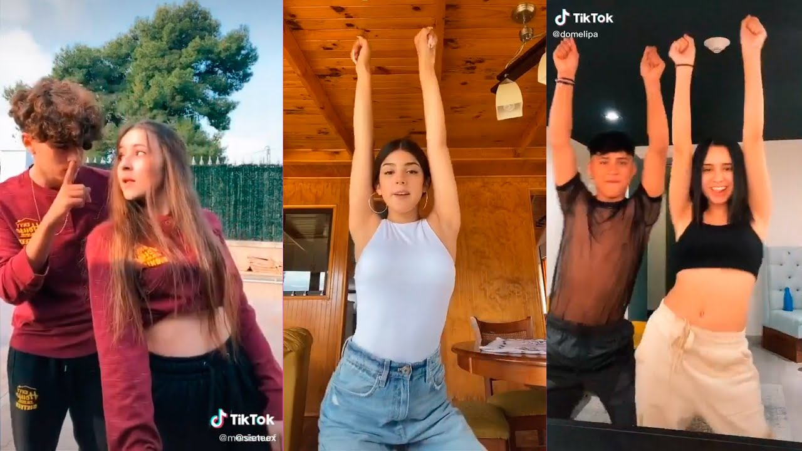

Virtual identity

In this final blog post I would like to discuss the concept of identity in the digital environment. The simple idea of identity in the real world is very complicated and is often analyzed from a phycological point of view. In the real world a lot of teenagers struggle with the concept of identity. I chose this topic because I feel that this is one of the most relevant problematics that came with the digital evolution.
To analyze the subject in depth I was thinking to take a look at dating profiles, because I believe that this is the best example of the construction of the virtual identity because dating profiles are at the border between real and virtual.

The virtual identity is constructed independent from the real identity because its performance depends solely on the social media platforms it was built for. Creating an online identity is characterized by a flexibility and succession of choises that are not possible in the physical world.Nowadays, when one thinks of self should think about two equally important aspects: real self
and virtual self
. In their study, Nagy and Koles state that the two identities should not be considered separated from one another, they should be considered as part of an individual’s personality and analyzed accordingly.
On the digital platforms there is a tendency for uniformization the pressure of conformation has a bigger influence then in the physical world. A good example for this are the viral trends on social media platforms (various dances on TikTok, cooking recipes, makeup trends, ALS Ice Bucket Challenge and so on and so forth, God knows the internet is filled with diferent kind of trends).
Dating apps were created with the purpose of helping people meet other people. Fast passing dating to meet the right
person for you. In the case, the aesthetics of creating a profile is very important because is the first impression other get about you. There are a lot of sites and blogs that teach people how to write their dating profiles to attract more attention, more likes and matches.
This seems interesting to me because what else can you write on your profile other then details about you personality so than other people can get to know you right? Well, things are not exactly like that. People teach other people how to manipulate their identity to perform the way they want to, to attract a certain type of people. In the creative process of the virtual identity people carry a rebranding act of the self, because similar to the real world, building an identity is an ongoing process that is in a continues state of change. The consumption of digital media adjusts and enhances the virtual identity. Jenny Sundén defined the process of creating a virtual identity as people typing themselves into being
Sherry Turkle writes in 1995 in her book Life on the Screenthat our online identities address to the fluidity and changing characteristics of the real identity.The multiple identities we construct across personal webpages, forums, MUDs and other interfaces reflect the degree to which individual identity has always been fluid, multiple and distributed.